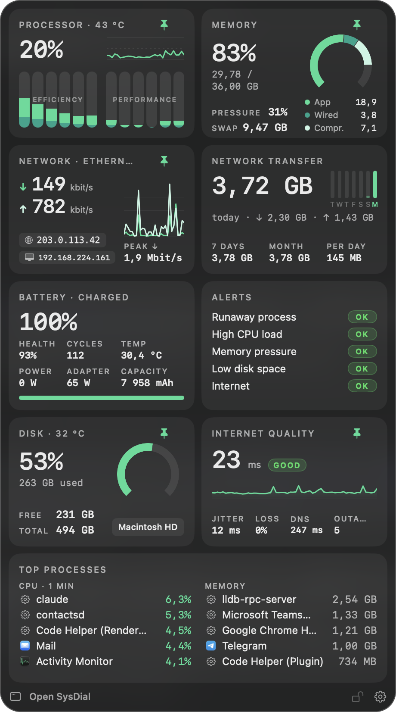
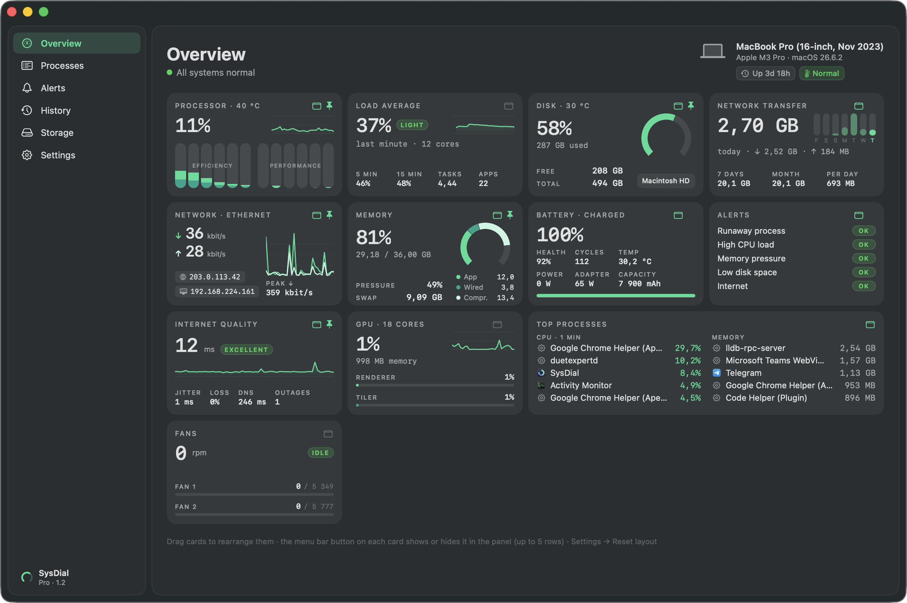

Your Mac, at a glance, in the menu bar.
SysDial shows processor, memory, disk, network and battery as live numbers in the menu bar, warns you before things slow down, and stays light while it does.

Everything you check, in one place
Pick what you want in the menu bar and in what order. Click it to open a panel of cards with the details.
System
- Processor with every efficiency and performance core
- Memory with pressure, swap and what it's used for
- GPU load and video memory
- Disk space, the way Finder counts it
- Battery health, cycles, power draw and time left
Network
- Download and upload speed with your public and local IP
- Data transferred today, this week and in your billing month
- Internet quality: latency, jitter, packet loss and outages
Apps
- Top processes by processor and memory
- Watched apps: follow one app's CPU and memory for days, with a memory alert
- Leftover dev processes that keep running after a terminal or editor closes
Alerts
- A runaway app keeping the processor busy
- High CPU load and memory pressure
- Low disk space and internet outages
Light enough to forget it's running
With live numbers in the menu bar and the panel closed, SysDial uses under 1% of the processor and under 100 MB of memory, even while watching several apps. Measured on a MacBook Pro with Apple M3 Pro, running on battery. It reads the same system counters as Activity Monitor and does nothing in the background that it doesn't need to.
Free, with Pro when you need more
The menu bar, the panel, alerts, widgets and Shortcuts are free. Pro adds the window, history and tools for when something goes wrong.
| Feature | Free | Pro |
|---|---|---|
| Live numbers in the menu bar, in your order | ✓ | ✓ |
| Panel with processor, memory, GPU, disk, network, data and battery | ✓ | ✓ |
| Alerts for runaway apps, CPU, memory, disk space and internet | ✓ | ✓ |
| Desktop widgets, Shortcuts and nine colour themes | ✓ | ✓ |
| Window with every cardIncluding load average and fans | — | ✓ |
| History30 days of CPU, memory and network, any period, CSV export | — | ✓ |
| Internet qualityLatency, jitter, packet loss, DNS checks and an outage log | — | ✓ |
| Process managerSearch, sort, reveal and quit any process | — | ✓ |
| Watched appsAn app's CPU and memory across restarts, with memory alerts | — | ✓ |
| Leftover dev process finderTerraform, node, python and similar tools left running | — | ✓ |
| Temperatures and fan speeds | — | ✓ |
| InsightsPlain-language explanations of what's slowing your Mac | — | ✓ |
| Quit a runaway app straight from the alert | — | ✓ |
| Cache and Spotlight cleanup | — | ✓ |

Your data stays on your Mac
SysDial has no accounts, no analytics and no tracking. Readings, history and the apps you watch are stored only on your Mac. It goes online for two things: to show your public IP, which you can turn off, and to check internet quality.